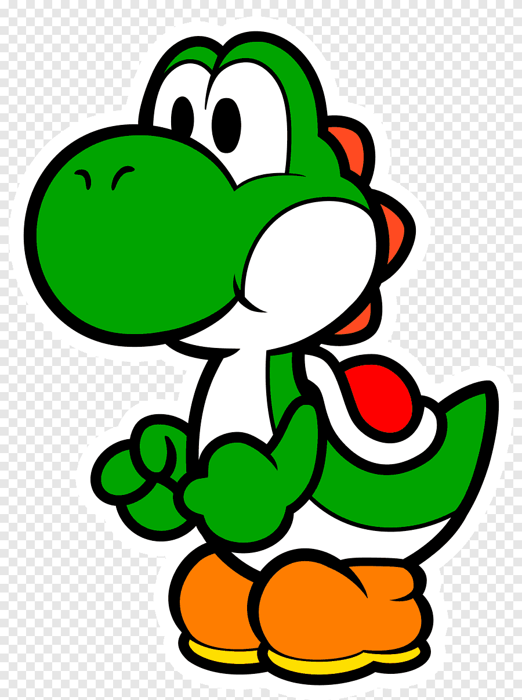

Bienvenidos a mi Curriculum Vitae, soy Yoshisaur T. Munchakoopas, descendiente de la especie Yoshis.
Nos puedes encontrar de varios colores pero el más importante de todos es el verde.
Actualmente y luego de muchas aventuras, me encuentro acompañando a mi amigo Mario, el cúal busca a su polola.